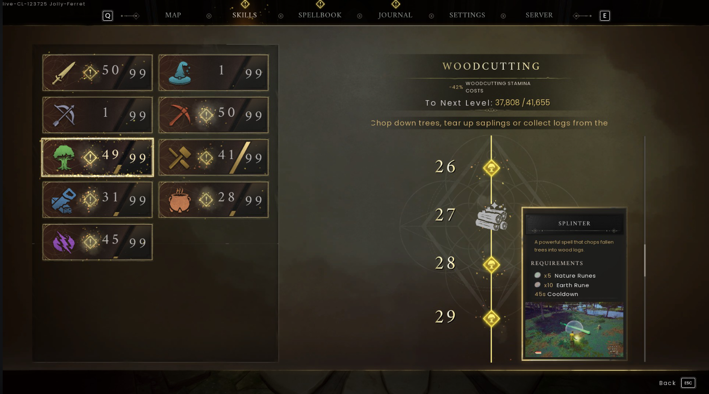
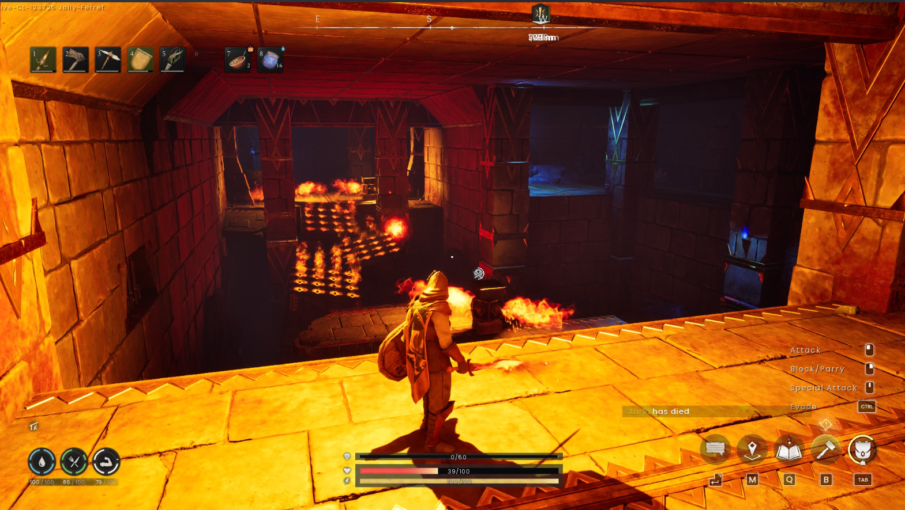
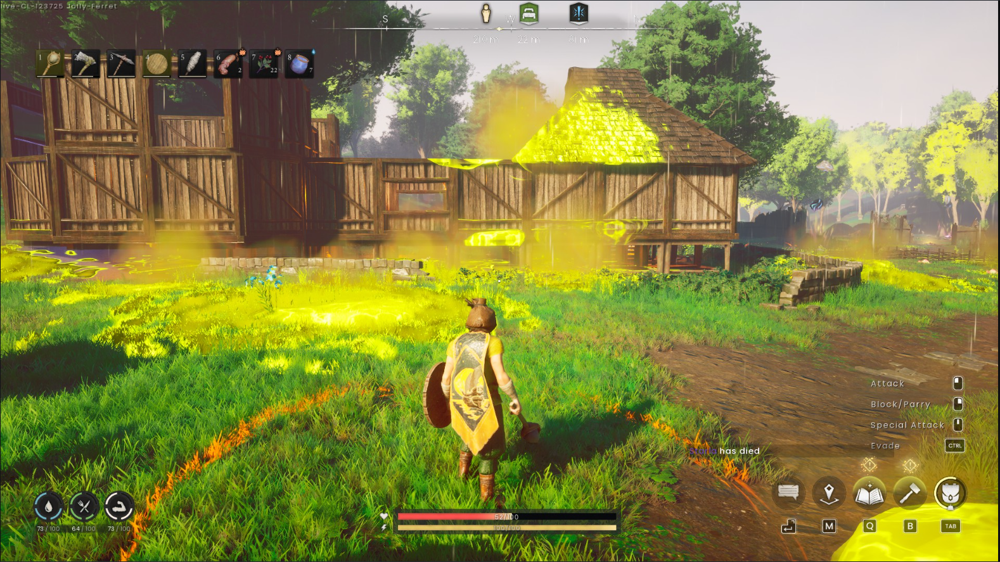
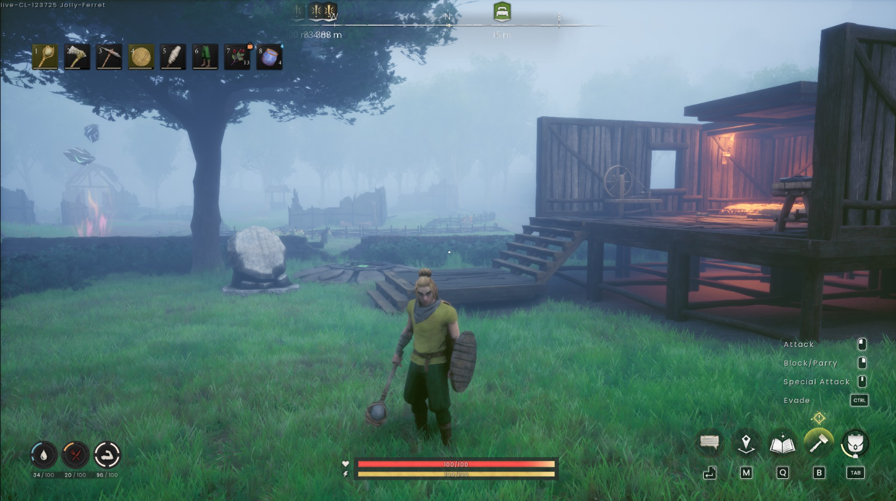
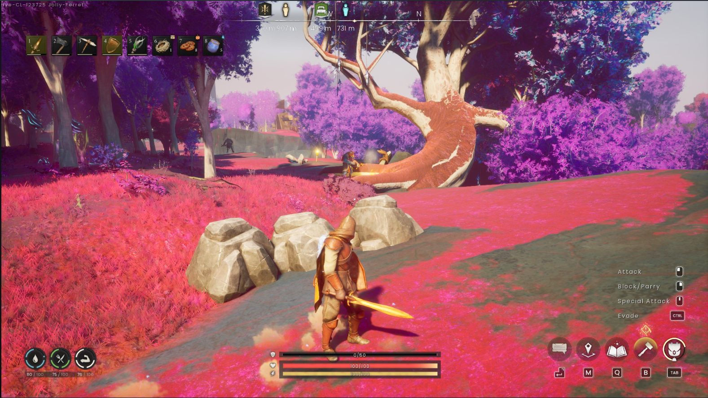
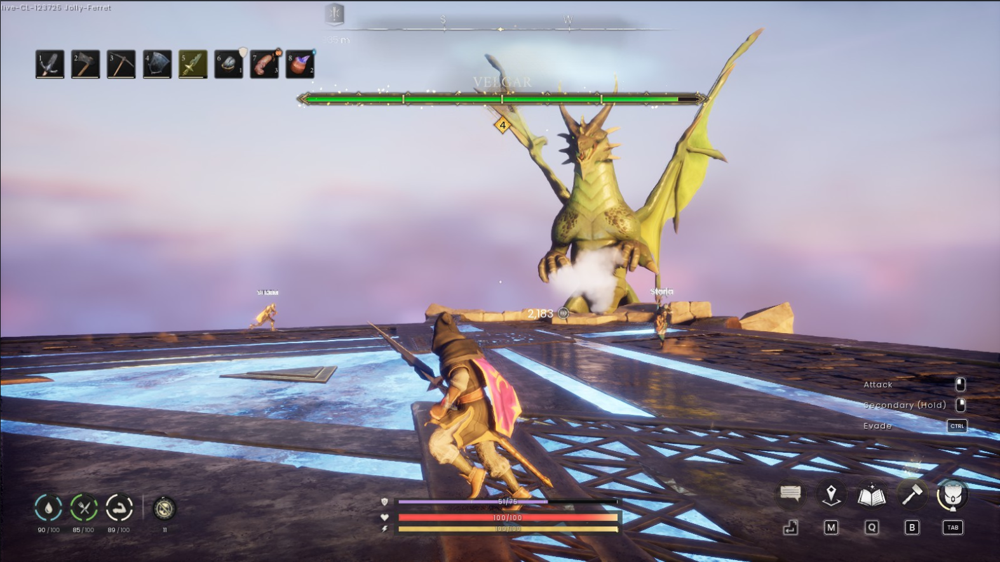
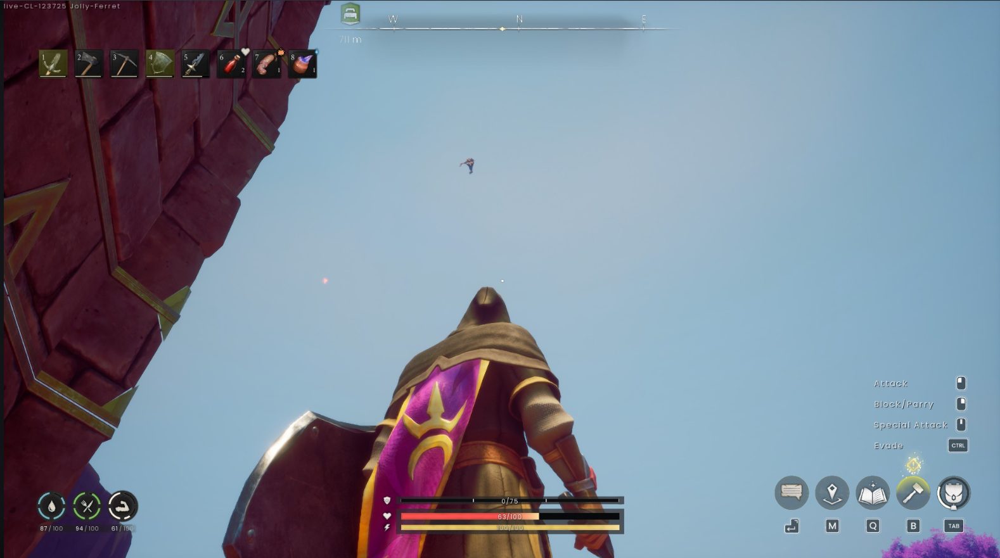

RuneScape: Dragonwilds
Desenvolvedor(a): Jagex Lta
Publicadora: Jagex Lta
Gênero: Aventura/Sobrevivencia
Engine: Unreal Engine 5
Plataformas: Microsoft Windows
Data de Lançamento: 15/04/2025
Introdução
No continente esquecido de Ashenfall, em RuneScape, os dragões despertaram. Reúna, construa, treine e crie para sobreviver neste jogo cooperativo de criação e sobrevivência (1-4). Somente dominando a sobrevivência e descobrindo segredos ancestrais será possível derrotar a Rainha Dragão — sozinho ou com aliados. Essa é a sinopse do jogo, é bom lembrar que essa review foi feita partir do primeiro beta do jogo
Mecânica
Primeiramente, eu não sou um jogador fiel de RuneScape. Já joguei muito tempo atrás, mas como o jogo era bastante em inglês e complexo, não conseguia entender direito como funcionava a mecânica naquela época. Comecei a jogar outros MMORPGs. Porém, esse jogo não é um MMORPG, e sim um jogo de aventura/sobrevivência com elementos de RPG famosos em RuneScape.
Começando com um ponto positivo: o que seria essa mecânica do RuneScape? É uma mecânica em que tudo o que você faz no jogo te garante experiência em uma skill, e essa skill te dá retorno. Nesse jogo, temos por enquanto 9 habilidades: Combate, Arqueiro, Magia, Serraria, Mineração, Construção de Casa, Criação de Itens (Artesanato), Culinária e Runas Mágicas.
Agora irei criticar algumas coisas que estão nessa imagem: se você observar bem, vai notar que as skills não passam do nível 50. Ou seja, o jogo definiu um limite para que o jogador não chegue no próximo update super evoluído. E o pior, para mim, é que as classes Mago e Arqueiro não podem upar, mesmo usando elas no jogo! Ou seja, se eu ficasse atirando de arqueiro, eu não ganhava retorno na skill. Senti também a ausência de outras skills que poderiam vir, como espada de uma mão, machado, espada de duas mãos — cairiam muito bem no jogo.
Outro ponto positivo, que acredito que seja tendência em jogos futuros por causa de Palworld, é a mecânica de facilitar a coleta de itens. Nessa imagem que mostrei, é um exemplo: o jogador não precisa usar machado para cortar árvore, e sim uma runa. Não era difícil obter runas, e aproveitei bastante essa magia para pegar madeira para meus amigos. Porém, a mecânica de sobrevivência não ficou boa nesse jogo: os status de sede e fome descem muito rápido. Apesar de ser fácil conseguir comida e bebida, o problema era ficar o tempo todo comendo ou bebendo algo.
E claro, falando de um jogo famoso em RPG, precisamos comentar sobre as dungeons. Elas são bem legais! Algumas exigem que você crie algo ou use uma runa de pulo para alcançar um baú, por exemplo. O único problema são os monstros e bosses: são sempre os mesmos. Só na última dungeon que fizemos tinha o mesmo boss, mas em quantidade duplicada.
Vou comentar mais sobre os inimigos depois, mas sobre a mecânica de combate: ela é até legal, com vários tipos de ataques. Porém, como citei antes, só dá para upar a mecânica de armas brancas. Isso forçava todo mundo a usar espadas. Às vezes, eu ia com cajado e minha amiga com arco e flecha, para atacar de longe, mas o dano era muito melhor corpo a corpo. Resumindo: não existe ainda um sistema de tank-arqueiro-mago no jogo.
Por fim, em questão de mecânica, preciso falar sobre algo que me encantou no início... e depois passei a odiar: o sistema de raids de monstros. Às vezes eles te caçam — legal, sem problema, é sempre bom defender a base. O problema é o dragão atacando do nada e soltando aquele rugido barulhento. A ideia de mostrar o tamanho dele é legal, porque o jogador pensa "tá vendo aquilo? você precisa matar ele!". Mas tinha um problema: na primeira parte do mapa, ele vinha muito para a base, e era bem irritante (ainda bem que ele não quebrava os objetos da casa). Porém, quando chegamos no 3º mapa, acho que bugamos ele, pois a base ficou instalado em uma montanha, e os ataques de veneno não acertavam a gente — caíam abaixo da montanha. Virou só um dragão barulhento no fim.
Gráficos
O jogo tem uma arte muito bonita, com vários tipos de biomas e cenários: floresta, pântano, floresta avermelhada, floresta com tempestade... E o design dos cenários é bem completo — com árvores, lagos, rios, construções, tudo deixando o ambiente mais vivo. Outro ponto positivo: o jogo apresenta mudanças climáticas que afetam o jogador. Por exemplo, uma área com raios (no bioma de tempestade) e outra com poças envenenadas (pântano), que geram mais desafios.
Falando na parte de construção de casas, achei ela simples demais. Por quê? Porque só é possível fazer casas bonitas no fim do jogo. Nem usar pedra no início dá. Só no fim se consegue usar um item chamado "ground stone", que deixa a casa mais bonita. No começo, temos que conviver com paredes simples de madeira. Além disso, o jogo segue regras de gravidade: é preciso sempre ter um apoio para construir andares superiores. Existe uma runa de construção, que permite ajustar a construção à distância, gastando recursos. Talvez tenha faltado a possibilidade de criar muralhas ou cercados. Senti muita falta disso nas Raids que enfrentamos.
Eu até daria uma nota maior nos gráficos, mas decidi reduzir por causa da pouca variedade de inimigos ou só variações dos mesmos. Exemplos: rato, lobo, goblins (e hobgoblins), dragão, galinha, avestruz (parece chocobo), vaca, ovelha, bode, planta carnívora. Nas dungeons, sempre os mesmos: rato e golem de runa, só mudando o tamanho. Total de inimigos? Uns 12, tirando as variações. Outra crítica: o criador de personagem é bem simples. Só pode criar humano! Em um mundo RPG, por que não adicionar elfos ou anões? Espero que no futuro adicionem isso.
Trilha Sonora
A trilha sonora é bem mediana. Algumas partes do mapa só mudavam a música em eventos como raids de goblin, dragão te atacando, ou início de batalhas. O jogo não trouxe nenhuma mecânica musical interessante, como criar seu próprio violão, ou um objeto para tocar entre amigos na base.
História
A história é bem simples: resume-se a caçar o dragão venenoso Velgor. A quest dele é até legalzinha, pois exige explorar o mapa. Eu e meus amigos enfrentamos ele, e foi uma luta legal. Não foi difícil, porque já estávamos bem equipados. O cenário de tempestade (onde enfrentamos Velgor) tinha minérios que forneciam excelentes itens. Falando nisso, não achei boa a recompensa do Velgor. Os meus itens valiam mais do que os dele. O escudo dele era 47 (Anti Dragon Shield) e meu escudo de ferro era 50.
O jogo também apresenta quests secundárias. Essas eu achei boas, pois envolviam puzzles, fazendo o jogador pensar. Porém, nem sempre a recompensa era boa. Só uma delas me deu algo útil: um cajado de mago forte. As outras davam capa que eu já tinha (por ter comprado acesso antecipado), e que só aumentava +2 em todos os status. No início é forte, mas no fim, nem tanto.
Como todo jogo coop que eu jogo, é difícil a história superar mecânica e gráficos. Quando se joga em conjunto, pelo menos pra mim, nesses jogos de aventura/sobrevivência, a história acaba ficando em segundo plano. Talvez por isso matamos o dragão tão fácil: exploramos bastante e melhoramos muito a base.
Otimização
O maior ponto negativo: não há tradução PT-BR. Fiquei sabendo que vão adicionar futuramente, mas no momento só há 5 idiomas (inglês, alemão, francês, espanhol e italiano). O jogo apresenta alguns glitchs que afetam a experiência. Às vezes, monstros e árvores atravessavam pedras. Teve um bug visual que minha amiga estava atirando, e o monstro subiu ao céu e depois caiu de volta — provavelmente só eu vi isso.
Veredito Final
RuneScape Dragonwilds ainda está em acesso antecipado, e apesar de trazer um universo promissor com potencial para crescer muito, ele ainda possui várias limitações que impactam diretamente na experiência do jogador. A proposta de misturar elementos clássicos de RuneScape com mecânicas modernas de sobrevivência e construção coop é interessante, e algumas ideias realmente brilham, como o uso de runas para facilitar a coleta de recursos, o sistema de dungeons com puzzles e o visual artístico dos biomas.
Por outro lado, existem falhas notáveis que precisam ser revistas: a limitação no progresso de algumas skills, o desequilíbrio entre classes (como o mago e arqueiro que não ganham XP porenquanto), a repetição de inimigos e chefes, e uma sobrevivência que soa mais como um incômodo do que um desafio real. O jogo ainda sofre com glitches e ausência de conteúdo mais diversificado, como raças jogáveis e mais opções de construção logo no início.
Mesmo com esses problemas, o jogo diverte, especialmente em grupo, e tem uma boa base para melhorar. Se a equipe de desenvolvimento realmente investir em expandir as mecânicas, equilibrar o sistema de classes, diversificar os inimigos e polir a experiência geral, ele pode se tornar um título de destaque no gênero de aventura/sobrevivência.
No estado atual, RuneScape Dragonwilds é um jogo que entrega bons momentos, mas ainda precisa de muito trabalho para atingir todo seu potencial.